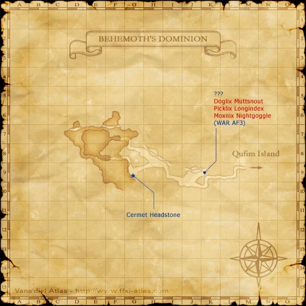

Before you begin
- Complete The Temple of Uggalepih; keep its Dark Fragment.
Starting point
Cermet Headstones (seven locations) · Behemoth's Dominion · G-9
Walkthrough
- Collect in any order. Approach each headstone closely and accept its prompt; after spawning enemies, defeat them and re-examine it.
- Ice: descend Fei’Yin at G-9; use I-5 to reach Cloister of Frost. Examine the headstone beyond the crystal.
- Water: enter Ordelle’s from La Theine F-7; follow I-6 → G-8 → H-9 stairs → H-12 drop → eastern tunnel → I-6 → H-9 → G-11 exit. Follow the isolated canyon.
- Earth: enter Quicksand Caves from Western Altepa J-9, drop at K-6, exit to the desert, then follow tunnels southwest to H-9.
- Lightning: Behemoth’s Dominion G-9; defeat Ancient Weapon and Legendary Weapon.
- Fire: Ifrit’s Cauldron entrance Yhoator G-6; map/grid route 4/H-8 → 7/D-12 → 5/J-8 → 2/E-7 → 7/G-7 → 8/C-7. Wait for spouts or trade Ice Clusters. In isolated Yuhtunga, turn left to the L-6/L-7 tunnels; defeat Carthi and Tipha.
- Wind: Cape Teriggan F-7 tunnel → G-5 passage → H-5; defeat Axesarion the Wanderer.
- Light: Zi’Tah J-9 path → I-7; defeat Doomed Pilgrims. Claim the final fragment to advance.
Battle and progress notes
- Ice, Water and Earth require no headstone fight. Native interaction range is 1.92 yalms.
Completion and reward
Seven fragments; title: Bearer of the Eight Prayers.
What this opens
Area maps
Open a zone below, then select a map to enlarge it. Match the named floors and grid coordinates in the steps; these are reference area maps, not a live position tracker.
Fei'Yin


La Theine Plateau


Ordelle's Caves


Western Altepa Desert


Quicksand Caves


Behemoth's Dominion



Ifrit's Cauldron


Yhoator Jungle


Yuhtunga Jungle


Cape Teriggan


The Sanctuary of Zi'Tah


Temple of Uggalepih


Zone guides
- Fei'Yin
- Cloister of Frost
- La Theine Plateau
- Ordelle's Caves
- Western Altepa Desert
- Quicksand Caves
- Behemoth's Dominion
- Ifrit's Cauldron
- Yhoator Jungle
- Yuhtunga Jungle
- Cape Teriggan
- The Sanctuary of Zi'Tah
- Temple of Uggalepih
References
- HorizonXI Wiki: Zilart Mission 5
- HorizonXI Wiki: Fire Fragment
- HorizonXI Wiki: Water Fragment
- HorizonXI Wiki: Earth Fragment
- HorizonXI Wiki: Ifrit's Cauldron
- HorizonXI Wiki: Ordelle's Caves
- Reviewed mission implementation
Steps are an original summary of the linked walkthrough and reviewed source. Other servers’ bonus rewards are not included. How to read requirements, waits and battlefield notes.
Additional level-75 reference
|
Walkthrough
- After completing Zilart Mission 4, Grav'iton tells you that you need to collect eight different fragments from across Vana'diel.
- To get a fragment, click on the headstone. Make sure to select yes.
- You must stand very very close to the headstone to obtain the fragment.
- You must see the the message "Obtained key item: XXXX fragment."
- You should always check your key items to ensure that you really obtained it.
- Upon obtaining your final fragment, the mission is complete and you will receive the message, "You now have all 8 fragments of light!"
- Only one player at a time can get the fragment. All others clicking the headstone at the same time will only get a message and have to click on the headstone again.
No Battles
- Dark Fragment:
This fragment is given to you by Grav'iton when you complete ZM4.
- Ice Fragment:
To get this fragment you need to go to Fei'Yin. Once you enter, go to G-9 and head downstairs. Go to I-5 to enter the Cloister of Frost. The headstone is against the wall past the crystal. If you have a level Summoner 15+ (that hasn't already beat the level 20 Shiva fight) and sufficient fame for a Mini Tuning Fork of Ice from Castilchat in Northern San d'Oria, you can warp directly to the Ice headstone.
- Water Fragment:
Go to La Theine Plateau and enter Ordelle's Caves through the canyon at F-7.
:Head east down to I-6 where you'll switch to another map. Follow the tunnel south-west to G-8. At G-8 go east and take the south tunnel at H-9. Follow the stairs upwards and continue south-ish until H-11/12. Drop down the hole here.
Head east to yet another tunnel (do not fall off any cliffs here!) and follow it upwards. When you reach I-6, head south. Keep going until H-9 where you'll find a tunnel that breaks off to the west. Continue past the bombs to zone into La Theine Plateau again.
Wander to the end of the canyon to find the headstone.
- Earth Fragment:
Go to J-9 in Western Altepa Desert and enter the Quicksand Caves. Go up to K-6 and drop down a sand pit (stand in the center and when it blows sand you'll fall). Follow the path until you exit back into Western Altepa Desert. Make your way to H-8/9 through the tunnels (basically south-west) to find the headstone. Sneak and invis are reccommended highly for any player under 65+

Battles
Notes:
- All required mobs for this are killable by 6 level 64 players or by a good 75nin/37war equiped for evasion, not DD, with a 50+ whm.
- Lightning Fragment:
Go to G-9 in Behemoth's Dominion. Kill the mobs in the area, and then touch the headstone. Two Weapons will appear: Legendary Weapon and Ancient Weapon. Defeat them and get the fragment. Note: If the person who touches the headstone has Sneak on them, you can pull just one Weapon without the other one attacking (note that they do magic aggro). It is possible to defeat only one of them and still get credit; however, you must allow the other Weapon to despawn first before defeating the one you pulled. If you defeat it before the other one despawns, you must pull the other one and defeat it as well.
- Can be easily soloed by a level 67 NIN by Sneak pulling. Be sure to keep it enfeebled, and you should have no trouble with it.
- Fire Fragment:
This one is involved...
View the map to the right for a beautiful illustration; beware, it's kinda large.
Another tip: once you zone into Ifrit's Cauldron and have gone to H-8, just follow the left wall the entire rest of the way until you zone back out. Otherwise, you can follow the directions below.
Enter Ifrit's Cauldron from Yhoator Jungle at G-6. You will want to make sure everyone stays Sneak/Invis'd. Be wary of magic aggroing mobs (ie: Bombs).
You're on Map 4 - Go to H-8 and pass into Map 7.
You're on Map 7 - Go to D-12 to get to Map 5.
You're on Map 5 - Head to J-8 to get to Map 2. There will be a Flame Spout in the way at H-6/7. Just wait, or trade an Ice Cluster to it. If you choose to trade, be wary of a Volcanic Gas nearby - you may have to kill it.
You're on Map 2 - Go to E-7 to get back to Map 7.
You're on Map 7 - Go to G-7 to get to Map 8.
You're on Map 8 - Follow the tunnel all the way to C-7 where you exit out into Yuhtunga Jungle. You'll pass by two Flame Spouts on the way.
So basically it's: G-6 > H-8 > D-12 > J-8 > E-7 > G-7 > C-7
Note: The Ash Dragon is usually guarding the path at the very end (before the last Fire Spout). He has True Hearing during night time, and will also use Draw In to warp anyone who has aggro back to him. (Sneak will work during the day time.) Fighting it is not recommended; he approaches the level of an HNM and will make mince meat out of almost any group that is here trying to complete the mission at the level it is typically attempted. It is best to wait until 6:00-18:00 (day time) before trying to get past. Otherwise, time it right and you can possibly walk into the tunnel without incident when he's far enough away from the entrance. Alternatively, you can have a "sacrifice" run in to aggro the dragon and keep him busy long enough for the rest of the party to get past. Be aware of the nearby Volcanic Bombs when attempting to Tractor and Raise, you may need to kill a couple. They are slightly stronger than the Volcanic Gas.
Now that you're in Yuhtunga Jungle, go to K-7 through one of the tunnels under the waterfall. Go to the headstone at L-6. Or, follow the left wall again and take the second tunnel. The Cermet Headstone is located exactly at the North Western edge of L-7
Two Opo-Opo will spawn when you touch the headstone: Carthi and Tipha. They both aggro. Defeat them and get your fragment.
Note: While you're at it, if you want an Opo-opo Necklace, trade a Garnet to this headstone after obtaining the fragment.
- Wind Fragment:
Go to F-7 in Cape Teriggan to find a secret tunnel. Follow this tunnel north out into the open again. Then go to another tunnel at G-5. Follow it back to find the head stone at H-5. A Shadow called Axesarion the Wanderer will spawn when you touch the headstone. Beware of Goblins that wander around here; since it is an outdoor area they will respawn quickly upon being defeated (5 minutes Earth time).
Note: While you're at it, if you want a Flagellant's Rope, trade a Rain Lily to this headstone after obtaining the fragment.
- Light Fragment:
Go the The Sanctuary of Zi'Tah and head to J-9. Follow a path north-is to I-7 to find the headstone. When you touch the headstone a Doomed type mob will appear, called Doomed Pilgrims. It is generally regarded as the most difficult of the headstone NMs and hits hard and fast, so be careful. After it's defeated, get your fragment.
- Note: Those that have completed Zilart Mission 7 - The Chamber of Oracles can click on the headstone and get a Bat Earring.
Game Description
- Mission Orders
- Somewhere on the island of Zepwell lie the remains of an ancient temple.
Adapted from Eden Wiki: Headstone Pilgrimage · Contributors and history · CC BY-SA 4.0. Revision 6641. Layout, links and optional background text adapted for Zenith.